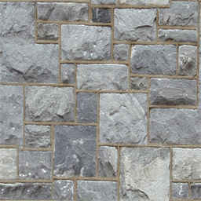
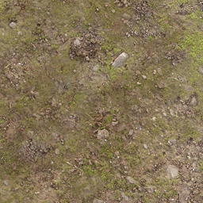
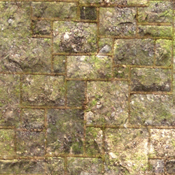
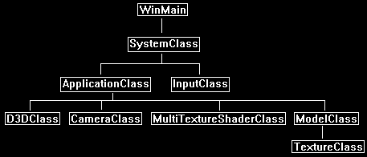

This tutorial will cover how to do multitexturing in DirectX 11.
Multitexturing is the process of blending two or more different textures to create a final texture.
The equation you use to blend the two textures can differ depending on the result you are trying to achieve.
In this tutorial we will look at just combining the average pixel color of the two textures to create an evenly blended final texture.
The first texture used in this tutorial we will call the base texture which looks like the following:

The second texture we will use to combine with the first one will be called the color texture.
It looks like the following:

These two textures will be combined in the pixel shader on a pixel-by-pixel basis. The blending equation we will use will be the following:
blendColor = (basePixel * colorPixel) * 2.0;
Using that equation and the two textures we will get the following result:

Framework
The framework has been updated to include the new MultiTextureShaderClass and use the ModelClass again.

We will start the code section by first looking at the new multitexture shader which was originally based on the texture shader file with some slight changes to add a second texture.
Multitexture.vs
Although the multitexture vertex shader is based on the original texture shader, we still need to add float3 normal in the VertexInputType since our model format going forward will always have normal vectors included.
We will ignore the normal vectors as they are not needed in the shader calculations, but they still need to be there to standardize the model input.
That is also why it is good to standardize your model format early on if possible so that you can avoid re-writes in your shader code.
////////////////////////////////////////////////////////////////////////////////
// Filename: multitexture.vs
////////////////////////////////////////////////////////////////////////////////
/////////////
// GLOBALS //
/////////////
cbuffer MatrixBuffer
{
matrix worldMatrix;
matrix viewMatrix;
matrix projectionMatrix;
};
//////////////
// TYPEDEFS //
//////////////
struct VertexInputType
{
float4 position : POSITION;
float2 tex : TEXCOORD0;
float3 normal : NORMAL;
};
struct PixelInputType
{
float4 position : SV_POSITION;
float2 tex : TEXCOORD0;
};
////////////////////////////////////////////////////////////////////////////////
// Vertex Shader
////////////////////////////////////////////////////////////////////////////////
PixelInputType MultiTextureVertexShader(VertexInputType input)
{
PixelInputType output;
// Change the position vector to be 4 units for proper matrix calculations.
input.position.w = 1.0f;
// Calculate the position of the vertex against the world, view, and projection matrices.
output.position = mul(input.position, worldMatrix);
output.position = mul(output.position, viewMatrix);
output.position = mul(output.position, projectionMatrix);
// Store the texture coordinates for the pixel shader.
output.tex = input.tex;
return output;
}
Multitexture.ps
////////////////////////////////////////////////////////////////////////////////
// Filename: multitexture.ps
////////////////////////////////////////////////////////////////////////////////
/////////////
// GLOBALS //
/////////////
The multitexture shader will texture in two textures.
We will assign the stone01.tga texture to shaderTexture1.
And we will assign the dirt01.tga texture to shaderTexture2.
Texture2D shaderTexture1 : register(t0);
Texture2D shaderTexture2 : register(t1);
SamplerState SampleType : register(s0);
//////////////
// TYPEDEFS //
//////////////
struct PixelInputType
{
float4 position : SV_POSITION;
float2 tex : TEXCOORD0;
};
////////////////////////////////////////////////////////////////////////////////
// Pixel Shader
////////////////////////////////////////////////////////////////////////////////
float4 MultiTexturePixelShader(PixelInputType input) : SV_TARGET
{
float4 color1;
float4 color2;
float4 blendColor;
In the pixel shader we will sample the stone and the dirt texture.
Once we have the pixel for each, we then combine them using the blending equation we discussed at the beginning of the tutorial.
We also always saturate the final result to make sure the pixel value is between 0 and 1 for all colors.
// Sample the pixel color from the textures using the sampler at this texture coordinate location.
color1 = shaderTexture1.Sample(SampleType, input.tex);
color2 = shaderTexture2.Sample(SampleType, input.tex);
// Combine the two textures together.
blendColor = color1 * color2 * 2.0;
// Saturate the final color.
blendColor = saturate(blendColor);
return blendColor;
}
Multitextureshaderclass.h
The MultiTextureShaderClass is just the TextureShaderClass re-written to use two textures instead of one.
////////////////////////////////////////////////////////////////////////////////
// Filename: multitextureshaderclass.h
////////////////////////////////////////////////////////////////////////////////
#ifndef _MULTITEXTURESHADERCLASS_H_
#define _MULTITEXTURESHADERCLASS_H_
//////////////
// INCLUDES //
//////////////
#include <d3d11.h>
#include <d3dcompiler.h>
#include <directxmath.h>
#include <fstream>
using namespace DirectX;
using namespace std;
////////////////////////////////////////////////////////////////////////////////
// Class name: MultiTextureShaderClass
////////////////////////////////////////////////////////////////////////////////
class MultiTextureShaderClass
{
private:
struct MatrixBufferType
{
XMMATRIX world;
XMMATRIX view;
XMMATRIX projection;
};
public:
MultiTextureShaderClass();
MultiTextureShaderClass(const MultiTextureShaderClass&);
~MultiTextureShaderClass();
bool Initialize(ID3D11Device*, HWND);
void Shutdown();
bool Render(ID3D11DeviceContext*, int, XMMATRIX, XMMATRIX, XMMATRIX, ID3D11ShaderResourceView*, ID3D11ShaderResourceView*);
private:
bool InitializeShader(ID3D11Device*, HWND, WCHAR*, WCHAR*);
void ShutdownShader();
void OutputShaderErrorMessage(ID3D10Blob*, HWND, WCHAR*);
bool SetShaderParameters(ID3D11DeviceContext*, XMMATRIX, XMMATRIX, XMMATRIX, ID3D11ShaderResourceView*, ID3D11ShaderResourceView*);
void RenderShader(ID3D11DeviceContext*, int);
private:
ID3D11VertexShader* m_vertexShader;
ID3D11PixelShader* m_pixelShader;
ID3D11InputLayout* m_layout;
ID3D11Buffer* m_matrixBuffer;
ID3D11SamplerState* m_sampleState;
};
#endif
Multitextureshaderclass.cpp
////////////////////////////////////////////////////////////////////////////////
// Filename: multitextureshaderclass.cpp
////////////////////////////////////////////////////////////////////////////////
#include "multitextureshaderclass.h"
MultiTextureShaderClass::MultiTextureShaderClass()
{
m_vertexShader = 0;
m_pixelShader = 0;
m_layout = 0;
m_matrixBuffer = 0;
m_sampleState = 0;
}
MultiTextureShaderClass::MultiTextureShaderClass(const MultiTextureShaderClass& other)
{
}
MultiTextureShaderClass::~MultiTextureShaderClass()
{
}
bool MultiTextureShaderClass::Initialize(ID3D11Device* device, HWND hwnd)
{
bool result;
wchar_t vsFilename[128];
wchar_t psFilename[128];
int error;
The multitexture HLSL shader files are loaded here in the Initialize function.
// Set the filename of the vertex shader.
error = wcscpy_s(vsFilename, 128, L"../Engine/multitexture.vs");
if(error != 0)
{
return false;
}
// Set the filename of the pixel shader.
error = wcscpy_s(psFilename, 128, L"../Engine/multitexture.ps");
if(error != 0)
{
return false;
}
// Initialize the vertex and pixel shaders.
result = InitializeShader(device, hwnd, vsFilename, psFilename);
if(!result)
{
return false;
}
return true;
}
Shutdown calls the ShutdownShader function to release the shader related interfaces.
void MultiTextureShaderClass::Shutdown()
{
// Shutdown the vertex and pixel shaders as well as the related objects.
ShutdownShader();
return;
}
The Render function now takes as input the two texture resource view pointers.
This will give the shader access to the two textures for blending operations.
bool MultiTextureShaderClass::Render(ID3D11DeviceContext* deviceContext, int indexCount, XMMATRIX worldMatrix, XMMATRIX viewMatrix,
XMMATRIX projectionMatrix, ID3D11ShaderResourceView* texture1, ID3D11ShaderResourceView* texture2)
{
bool result;
// Set the shader parameters that it will use for rendering.
result = SetShaderParameters(deviceContext, worldMatrix, viewMatrix, projectionMatrix, texture1, texture2);
if(!result)
{
return false;
}
// Now render the prepared buffers with the shader.
RenderShader(deviceContext, indexCount);
return true;
}
The InitializeShader function loads the vertex and pixel shader as well as setting up the layout, matrix buffer, and sample state.
bool MultiTextureShaderClass::InitializeShader(ID3D11Device* device, HWND hwnd, WCHAR* vsFilename, WCHAR* psFilename)
{
HRESULT result;
ID3D10Blob* errorMessage;
ID3D10Blob* vertexShaderBuffer;
ID3D10Blob* pixelShaderBuffer;
D3D11_INPUT_ELEMENT_DESC polygonLayout[3];
unsigned int numElements;
D3D11_BUFFER_DESC matrixBufferDesc;
D3D11_SAMPLER_DESC samplerDesc;
// Initialize the pointers this function will use to null.
errorMessage = 0;
vertexShaderBuffer = 0;
pixelShaderBuffer = 0;
The multitexture vertex shader is loaded here.
// Compile the vertex shader code.
result = D3DCompileFromFile(vsFilename, NULL, NULL, "MultiTextureVertexShader", "vs_5_0", D3D10_SHADER_ENABLE_STRICTNESS, 0,
&vertexShaderBuffer, &errorMessage);
if(FAILED(result))
{
// If the shader failed to compile it should have writen something to the error message.
if(errorMessage)
{
OutputShaderErrorMessage(errorMessage, hwnd, vsFilename);
}
// If there was nothing in the error message then it simply could not find the shader file itself.
else
{
MessageBox(hwnd, vsFilename, L"Missing Shader File", MB_OK);
}
return false;
}
The multitexture pixel shader is loaded here.
// Compile the pixel shader code.
result = D3DCompileFromFile(psFilename, NULL, NULL, "MultiTexturePixelShader", "ps_5_0", D3D10_SHADER_ENABLE_STRICTNESS, 0,
&pixelShaderBuffer, &errorMessage);
if(FAILED(result))
{
// If the shader failed to compile it should have writen something to the error message.
if(errorMessage)
{
OutputShaderErrorMessage(errorMessage, hwnd, psFilename);
}
// If there was nothing in the error message then it simply could not find the file itself.
else
{
MessageBox(hwnd, psFilename, L"Missing Shader File", MB_OK);
}
return false;
}
// Create the vertex shader from the buffer.
result = device->CreateVertexShader(vertexShaderBuffer->GetBufferPointer(), vertexShaderBuffer->GetBufferSize(), NULL, &m_vertexShader);
if(FAILED(result))
{
return false;
}
// Create the pixel shader from the buffer.
result = device->CreatePixelShader(pixelShaderBuffer->GetBufferPointer(), pixelShaderBuffer->GetBufferSize(), NULL, &m_pixelShader);
if(FAILED(result))
{
return false;
}
// Create the vertex input layout description.
polygonLayout[0].SemanticName = "POSITION";
polygonLayout[0].SemanticIndex = 0;
polygonLayout[0].Format = DXGI_FORMAT_R32G32B32_FLOAT;
polygonLayout[0].InputSlot = 0;
polygonLayout[0].AlignedByteOffset = 0;
polygonLayout[0].InputSlotClass = D3D11_INPUT_PER_VERTEX_DATA;
polygonLayout[0].InstanceDataStepRate = 0;
polygonLayout[1].SemanticName = "TEXCOORD";
polygonLayout[1].SemanticIndex = 0;
polygonLayout[1].Format = DXGI_FORMAT_R32G32_FLOAT;
polygonLayout[1].InputSlot = 0;
polygonLayout[1].AlignedByteOffset = D3D11_APPEND_ALIGNED_ELEMENT;
polygonLayout[1].InputSlotClass = D3D11_INPUT_PER_VERTEX_DATA;
polygonLayout[1].InstanceDataStepRate = 0;
polygonLayout[2].SemanticName = "NORMAL";
polygonLayout[2].SemanticIndex = 0;
polygonLayout[2].Format = DXGI_FORMAT_R32G32B32_FLOAT;
polygonLayout[2].InputSlot = 0;
polygonLayout[2].AlignedByteOffset = D3D11_APPEND_ALIGNED_ELEMENT;
polygonLayout[2].InputSlotClass = D3D11_INPUT_PER_VERTEX_DATA;
polygonLayout[2].InstanceDataStepRate = 0;
// Get a count of the elements in the layout.
numElements = sizeof(polygonLayout) / sizeof(polygonLayout[0]);
// Create the vertex input layout.
result = device->CreateInputLayout(polygonLayout, numElements, vertexShaderBuffer->GetBufferPointer(),
vertexShaderBuffer->GetBufferSize(), &m_layout);
if(FAILED(result))
{
return false;
}
// Release the vertex shader buffer and pixel shader buffer since they are no longer needed.
vertexShaderBuffer->Release();
vertexShaderBuffer = 0;
pixelShaderBuffer->Release();
pixelShaderBuffer = 0;
// Setup the description of the dynamic matrix constant buffer that is in the vertex shader.
matrixBufferDesc.Usage = D3D11_USAGE_DYNAMIC;
matrixBufferDesc.ByteWidth = sizeof(MatrixBufferType);
matrixBufferDesc.BindFlags = D3D11_BIND_CONSTANT_BUFFER;
matrixBufferDesc.CPUAccessFlags = D3D11_CPU_ACCESS_WRITE;
matrixBufferDesc.MiscFlags = 0;
matrixBufferDesc.StructureByteStride = 0;
// Create the constant buffer pointer so we can access the vertex shader constant buffer from within this class.
result = device->CreateBuffer(&matrixBufferDesc, NULL, &m_matrixBuffer);
if(FAILED(result))
{
return false;
}
// Create a texture sampler state description.
samplerDesc.Filter = D3D11_FILTER_MIN_MAG_MIP_LINEAR;
samplerDesc.AddressU = D3D11_TEXTURE_ADDRESS_WRAP;
samplerDesc.AddressV = D3D11_TEXTURE_ADDRESS_WRAP;
samplerDesc.AddressW = D3D11_TEXTURE_ADDRESS_WRAP;
samplerDesc.MipLODBias = 0.0f;
samplerDesc.MaxAnisotropy = 1;
samplerDesc.ComparisonFunc = D3D11_COMPARISON_ALWAYS;
samplerDesc.BorderColor[0] = 0;
samplerDesc.BorderColor[1] = 0;
samplerDesc.BorderColor[2] = 0;
samplerDesc.BorderColor[3] = 0;
samplerDesc.MinLOD = 0;
samplerDesc.MaxLOD = D3D11_FLOAT32_MAX;
// Create the texture sampler state.
result = device->CreateSamplerState(&samplerDesc, &m_sampleState);
if(FAILED(result))
{
return false;
}
return true;
}
ShutdownShader releases all the interfaces that were setup in the InitializeShader function.
void MultiTextureShaderClass::ShutdownShader()
{
// Release the sampler state.
if(m_sampleState)
{
m_sampleState->Release();
m_sampleState = 0;
}
// Release the matrix constant buffer.
if(m_matrixBuffer)
{
m_matrixBuffer->Release();
m_matrixBuffer = 0;
}
// Release the layout.
if(m_layout)
{
m_layout->Release();
m_layout = 0;
}
// Release the pixel shader.
if(m_pixelShader)
{
m_pixelShader->Release();
m_pixelShader = 0;
}
// Release the vertex shader.
if(m_vertexShader)
{
m_vertexShader->Release();
m_vertexShader = 0;
}
return;
}
The OutputShaderErrorMessage function writes out an error to a file if there is an issue compiling the vertex or pixel shader HLSL files.
void MultiTextureShaderClass::OutputShaderErrorMessage(ID3D10Blob* errorMessage, HWND hwnd, WCHAR* shaderFilename)
{
char* compileErrors;
unsigned long long bufferSize, i;
ofstream fout;
// Get a pointer to the error message text buffer.
compileErrors = (char*)(errorMessage->GetBufferPointer());
// Get the length of the message.
bufferSize = errorMessage->GetBufferSize();
// Open a file to write the error message to.
fout.open("shader-error.txt");
// Write out the error message.
for(i=0; i<bufferSize; i++)
{
fout << compileErrors[i];
}
// Close the file.
fout.close();
// Release the error message.
errorMessage->Release();
errorMessage = 0;
// Pop a message up on the screen to notify the user to check the text file for compile errors.
MessageBox(hwnd, L"Error compiling shader. Check shader-error.txt for message.", shaderFilename, MB_OK);
return;
}
SetShaderParameters sets the matrices and the two textures in the shader before rendering.
bool MultiTextureShaderClass::SetShaderParameters(ID3D11DeviceContext* deviceContext, XMMATRIX worldMatrix, XMMATRIX viewMatrix,
XMMATRIX projectionMatrix, ID3D11ShaderResourceView* texture1, ID3D11ShaderResourceView* texture2)
{
HRESULT result;
D3D11_MAPPED_SUBRESOURCE mappedResource;
MatrixBufferType* dataPtr;
unsigned int bufferNumber;
// Transpose the matrices to prepare them for the shader.
worldMatrix = XMMatrixTranspose(worldMatrix);
viewMatrix = XMMatrixTranspose(viewMatrix);
projectionMatrix = XMMatrixTranspose(projectionMatrix);
// Lock the constant buffer so it can be written to.
result = deviceContext->Map(m_matrixBuffer, 0, D3D11_MAP_WRITE_DISCARD, 0, &mappedResource);
if(FAILED(result))
{
return false;
}
// Get a pointer to the data in the constant buffer.
dataPtr = (MatrixBufferType*)mappedResource.pData;
// Copy the matrices into the constant buffer.
dataPtr->world = worldMatrix;
dataPtr->view = viewMatrix;
dataPtr->projection = projectionMatrix;
// Unlock the constant buffer.
deviceContext->Unmap(m_matrixBuffer, 0);
// Set the position of the constant buffer in the vertex shader.
bufferNumber = 0;
// Finally set the constant buffer in the vertex shader with the updated values.
deviceContext->VSSetConstantBuffers(bufferNumber, 1, &m_matrixBuffer);
Here we set the two textures in the pixel shader so that we can do a blend between them.
// Set shader texture resources in the pixel shader.
deviceContext->PSSetShaderResources(0, 1, &texture1);
deviceContext->PSSetShaderResources(1, 1, &texture2);
return true;
}
The RenderShader function sets the layout, shaders, and sampler.
It then draws the model using the shader.
void MultiTextureShaderClass::RenderShader(ID3D11DeviceContext* deviceContext, int indexCount)
{
// Set the vertex input layout.
deviceContext->IASetInputLayout(m_layout);
// Set the vertex and pixel shaders that will be used to render this triangle.
deviceContext->VSSetShader(m_vertexShader, NULL, 0);
deviceContext->PSSetShader(m_pixelShader, NULL, 0);
// Set the sampler state in the pixel shader.
deviceContext->PSSetSamplers(0, 1, &m_sampleState);
// Render the triangle.
deviceContext->DrawIndexed(indexCount, 0, 0);
return;
}
Modelclass.h
The ModelClass has been modified to load and use two textures now instead of just one.
////////////////////////////////////////////////////////////////////////////////
// Filename: modelclass.h
////////////////////////////////////////////////////////////////////////////////
#ifndef _MODELCLASS_H_
#define _MODELCLASS_H_
//////////////
// INCLUDES //
//////////////
#include <d3d11.h>
#include <directxmath.h>
#include <fstream>
using namespace DirectX;
using namespace std;
///////////////////////
// MY CLASS INCLUDES //
///////////////////////
#include "textureclass.h"
////////////////////////////////////////////////////////////////////////////////
// Class name: ModelClass
////////////////////////////////////////////////////////////////////////////////
class ModelClass
{
private:
struct VertexType
{
XMFLOAT3 position;
XMFLOAT2 texture;
XMFLOAT3 normal;
};
struct ModelType
{
float x, y, z;
float tu, tv;
float nx, ny, nz;
};
public:
ModelClass();
ModelClass(const ModelClass&);
~ModelClass();
bool Initialize(ID3D11Device*, ID3D11DeviceContext*, char*, char*, char*);
void Shutdown();
void Render(ID3D11DeviceContext*);
int GetIndexCount();
ID3D11ShaderResourceView* GetTexture(int);
private:
bool InitializeBuffers(ID3D11Device*);
void ShutdownBuffers();
void RenderBuffers(ID3D11DeviceContext*);
bool LoadTextures(ID3D11Device*, ID3D11DeviceContext*, char*, char*);
void ReleaseTextures();
bool LoadModel(char*);
void ReleaseModel();
private:
ID3D11Buffer *m_vertexBuffer, *m_indexBuffer;
int m_vertexCount, m_indexCount;
TextureClass* m_Textures;
ModelType* m_model;
};
#endif
Modelclass.cpp
////////////////////////////////////////////////////////////////////////////////
// Filename: modelclass.cpp
////////////////////////////////////////////////////////////////////////////////
#include "modelclass.h"
ModelClass::ModelClass()
{
m_vertexBuffer = 0;
m_indexBuffer = 0;
m_Textures = 0;
m_model = 0;
}
ModelClass::ModelClass(const ModelClass& other)
{
}
ModelClass::~ModelClass()
{
}
bool ModelClass::Initialize(ID3D11Device* device, ID3D11DeviceContext* deviceContext, char* modelFilename, char* textureFilename1, char* textureFilename2)
{
bool result;
// Load in the model data.
result = LoadModel(modelFilename);
if(!result)
{
return false;
}
// Initialize the vertex and index buffers.
result = InitializeBuffers(device);
if(!result)
{
return false;
}
We now call the LoadTextures function which will load two textures.
// Load the textures for this model.
result = LoadTextures(device, deviceContext, textureFilename1, textureFilename2);
if(!result)
{
return false;
}
return true;
}
void ModelClass::Shutdown()
{
The Shutdown function calls the ReleaseTextures function which will release both textures that were loaded.
// Release the model textures.
ReleaseTextures();
// Shutdown the vertex and index buffers.
ShutdownBuffers();
// Release the model data.
ReleaseModel();
return;
}
void ModelClass::Render(ID3D11DeviceContext* deviceContext)
{
// Put the vertex and index buffers on the graphics pipeline to prepare them for drawing.
RenderBuffers(deviceContext);
return;
}
int ModelClass::GetIndexCount()
{
return m_indexCount;
}
The GetTexture function now returns a texture from the texture object array based in the input index value.
ID3D11ShaderResourceView* ModelClass::GetTexture(int index)
{
return m_Textures[index].GetTexture();
}
bool ModelClass::InitializeBuffers(ID3D11Device* device)
{
VertexType* vertices;
unsigned long* indices;
D3D11_BUFFER_DESC vertexBufferDesc, indexBufferDesc;
D3D11_SUBRESOURCE_DATA vertexData, indexData;
HRESULT result;
int i;
// Create the vertex array.
vertices = new VertexType[m_vertexCount];
// Create the index array.
indices = new unsigned long[m_indexCount];
// Load the vertex array and index array with data.
for(i=0; i<m_vertexCount; i++)
{
vertices[i].position = XMFLOAT3(m_model[i].x, m_model[i].y, m_model[i].z);
vertices[i].texture = XMFLOAT2(m_model[i].tu, m_model[i].tv);
vertices[i].normal = XMFLOAT3(m_model[i].nx, m_model[i].ny, m_model[i].nz);
indices[i] = i;
}
// Set up the description of the static vertex buffer.
vertexBufferDesc.Usage = D3D11_USAGE_DEFAULT;
vertexBufferDesc.ByteWidth = sizeof(VertexType) * m_vertexCount;
vertexBufferDesc.BindFlags = D3D11_BIND_VERTEX_BUFFER;
vertexBufferDesc.CPUAccessFlags = 0;
vertexBufferDesc.MiscFlags = 0;
vertexBufferDesc.StructureByteStride = 0;
// Give the subresource structure a pointer to the vertex data.
vertexData.pSysMem = vertices;
vertexData.SysMemPitch = 0;
vertexData.SysMemSlicePitch = 0;
// Now create the vertex buffer.
result = device->CreateBuffer(&vertexBufferDesc, &vertexData, &m_vertexBuffer);
if(FAILED(result))
{
return false;
}
// Set up the description of the static index buffer.
indexBufferDesc.Usage = D3D11_USAGE_DEFAULT;
indexBufferDesc.ByteWidth = sizeof(unsigned long) * m_indexCount;
indexBufferDesc.BindFlags = D3D11_BIND_INDEX_BUFFER;
indexBufferDesc.CPUAccessFlags = 0;
indexBufferDesc.MiscFlags = 0;
indexBufferDesc.StructureByteStride = 0;
// Give the subresource structure a pointer to the index data.
indexData.pSysMem = indices;
indexData.SysMemPitch = 0;
indexData.SysMemSlicePitch = 0;
// Create the index buffer.
result = device->CreateBuffer(&indexBufferDesc, &indexData, &m_indexBuffer);
if(FAILED(result))
{
return false;
}
// Release the arrays now that the vertex and index buffers have been created and loaded.
delete [] vertices;
vertices = 0;
delete [] indices;
indices = 0;
return true;
}
void ModelClass::ShutdownBuffers()
{
// Release the index buffer.
if(m_indexBuffer)
{
m_indexBuffer->Release();
m_indexBuffer = 0;
}
// Release the vertex buffer.
if(m_vertexBuffer)
{
m_vertexBuffer->Release();
m_vertexBuffer = 0;
}
return;
}
void ModelClass::RenderBuffers(ID3D11DeviceContext* deviceContext)
{
unsigned int stride;
unsigned int offset;
// Set vertex buffer stride and offset.
stride = sizeof(VertexType);
offset = 0;
// Set the vertex buffer to active in the input assembler so it can be rendered.
deviceContext->IASetVertexBuffers(0, 1, &m_vertexBuffer, &stride, &offset);
// Set the index buffer to active in the input assembler so it can be rendered.
deviceContext->IASetIndexBuffer(m_indexBuffer, DXGI_FORMAT_R32_UINT, 0);
// Set the type of primitive that should be rendered from this vertex buffer, in this case triangles.
deviceContext->IASetPrimitiveTopology(D3D11_PRIMITIVE_TOPOLOGY_TRIANGLELIST);
return;
}
The LoadTextures function takes as input two file names for two different textures.
It will load both textures.
bool ModelClass::LoadTextures(ID3D11Device* device, ID3D11DeviceContext* deviceContext, char* filename1, char* filename2)
{
bool result;
// Create and initialize the texture object array.
m_Textures = new TextureClass[2];
result = m_Textures[0].Initialize(device, deviceContext, filename1);
if(!result)
{
return false;
}
result = m_Textures[1].Initialize(device, deviceContext, filename2);
if(!result)
{
return false;
}
return true;
}
The ReleaseTextures function will release the two texture objects that were created.
void ModelClass::ReleaseTextures()
{
// Release the texture object array.
if(m_Textures)
{
m_Textures[0].Shutdown();
m_Textures[1].Shutdown();
delete [] m_Textures;
m_Textures = 0;
}
return;
}
bool ModelClass::LoadModel(char* filename)
{
ifstream fin;
char input;
int i;
// Open the model file.
fin.open(filename);
// If it could not open the file then exit.
if(fin.fail())
{
return false;
}
// Read up to the value of vertex count.
fin.get(input);
while (input != ':')
{
fin.get(input);
}
// Read in the vertex count.
fin >> m_vertexCount;
// Set the number of indices to be the same as the vertex count.
m_indexCount = m_vertexCount;
// Create the model using the vertex count that was read in.
m_model = new ModelType[m_vertexCount];
// Read up to the beginning of the data.
fin.get(input);
while (input != ':')
{
fin.get(input);
}
fin.get(input);
fin.get(input);
// Read in the vertex data.
for(i=0; i<m_vertexCount; i++)
{
fin >> m_model[i].x >> m_model[i].y >> m_model[i].z;
fin >> m_model[i].tu >> m_model[i].tv;
fin >> m_model[i].nx >> m_model[i].ny >> m_model[i].nz;
}
// Close the model file.
fin.close();
return true;
}
void ModelClass::ReleaseModel()
{
if(m_model)
{
delete [] m_model;
m_model = 0;
}
return;
}
Applicationclass.h
We have added the new MultiTextureShaderClass to the ApplicationClass.
And we have also added back in the ModelClass which has been slightly modified to handle two textures now.
////////////////////////////////////////////////////////////////////////////////
// Filename: applicationclass.h
////////////////////////////////////////////////////////////////////////////////
#ifndef _APPLICATIONCLASS_H_
#define _APPLICATIONCLASS_H_
///////////////////////
// MY CLASS INCLUDES //
///////////////////////
#include "d3dclass.h"
#include "inputclass.h"
#include "cameraclass.h"
#include "multitextureshaderclass.h"
#include "modelclass.h"
/////////////
// GLOBALS //
/////////////
const bool FULL_SCREEN = false;
const bool VSYNC_ENABLED = true;
const float SCREEN_DEPTH = 1000.0f;
const float SCREEN_NEAR = 0.3f;
////////////////////////////////////////////////////////////////////////////////
// Class name: ApplicationClass
////////////////////////////////////////////////////////////////////////////////
class ApplicationClass
{
public:
ApplicationClass();
ApplicationClass(const ApplicationClass&);
~ApplicationClass();
bool Initialize(int, int, HWND);
void Shutdown();
bool Frame(InputClass*);
private:
bool Render();
private:
D3DClass* m_Direct3D;
CameraClass* m_Camera;
MultiTextureShaderClass* m_MultiTextureShader;
ModelClass* m_Model;
};
#endif
Applicationclass.cpp
////////////////////////////////////////////////////////////////////////////////
// Filename: applicationclass.cpp
////////////////////////////////////////////////////////////////////////////////
#include "applicationclass.h"
ApplicationClass::ApplicationClass()
{
m_Direct3D = 0;
m_Camera = 0;
m_MultiTextureShader = 0;
m_Model = 0;
}
ApplicationClass::ApplicationClass(const ApplicationClass& other)
{
}
ApplicationClass::~ApplicationClass()
{
}
bool ApplicationClass::Initialize(int screenWidth, int screenHeight, HWND hwnd)
{
char modelFilename[128], textureFilename1[128], textureFilename2[128];
bool result;
// Create and initialize the Direct3D object.
m_Direct3D = new D3DClass;
result = m_Direct3D->Initialize(screenWidth, screenHeight, VSYNC_ENABLED, hwnd, FULL_SCREEN, SCREEN_DEPTH, SCREEN_NEAR);
if(!result)
{
MessageBox(hwnd, L"Could not initialize Direct3D", L"Error", MB_OK);
return false;
}
// Create and initialize the camera object.
m_Camera = new CameraClass;
We will move the camera slightly closer so that we can clearly see the blending effect.
m_Camera->SetPosition(0.0f, 0.0f, -5.0f);
m_Camera->Render();
We create and initialize the new MultiTextureShaderClass object here.
// Create and initialize the multitexture shader object.
m_MultiTextureShader = new MultiTextureShaderClass;
result = m_MultiTextureShader->Initialize(m_Direct3D->GetDevice(), hwnd);
if(!result)
{
MessageBox(hwnd, L"Could not initialize the multitexture shader object.", L"Error", MB_OK);
return false;
}
For the model we will use just a simple square model.
For the two textures we will use stone01.tga and dirt01.tga.
// Set the file name of the model.
strcpy_s(modelFilename, "../Engine/data/square.txt");
// Set the file name of the textures.
strcpy_s(textureFilename1, "../Engine/data/stone01.tga");
strcpy_s(textureFilename2, "../Engine/data/dirt01.tga");
// Create and initialize the model object.
m_Model = new ModelClass;
result = m_Model->Initialize(m_Direct3D->GetDevice(), m_Direct3D->GetDeviceContext(), modelFilename, textureFilename1, textureFilename2);
if(!result)
{
return false;
}
return true;
}
The Shutdown function releases the new MultiTextureShaderClass object and the model object.
void ApplicationClass::Shutdown()
{
// Release the model object.
if(m_Model)
{
m_Model->Shutdown();
delete m_Model;
m_Model = 0;
}
// Release the multitexture shader object.
if(m_MultiTextureShader)
{
m_MultiTextureShader->Shutdown();
delete m_MultiTextureShader;
m_MultiTextureShader = 0;
}
// Release the camera object.
if(m_Camera)
{
delete m_Camera;
m_Camera = 0;
}
// Release the Direct3D object.
if(m_Direct3D)
{
m_Direct3D->Shutdown();
delete m_Direct3D;
m_Direct3D = 0;
}
return;
}
bool ApplicationClass::Frame(InputClass* Input)
{
bool result;
// Check if the user pressed escape and wants to exit the application.
if(Input->IsEscapePressed())
{
return false;
}
// Render the graphics scene.
result = Render();
if(!result)
{
return false;
}
return true;
}
In the Render function we now render the square model using the model and the two textures.
The shader will take care of blending those two textures.
Also note we are using a 3D projection matrix again since the square object is a 3D model.
bool ApplicationClass::Render()
{
XMMATRIX worldMatrix, viewMatrix, projectionMatrix;
bool result;
// Clear the buffers to begin the scene.
m_Direct3D->BeginScene(0.0f, 0.0f, 0.0f, 1.0f);
// Get the world, view, and projection matrices from the camera and d3d objects.
m_Direct3D->GetWorldMatrix(worldMatrix);
m_Camera->GetViewMatrix(viewMatrix);
m_Direct3D->GetProjectionMatrix(projectionMatrix);
// Render the model using the multitexture shader.
m_Model->Render(m_Direct3D->GetDeviceContext());
result = m_MultiTextureShader->Render(m_Direct3D->GetDeviceContext(), m_Model->GetIndexCount(), worldMatrix, viewMatrix, projectionMatrix,
m_Model->GetTexture(0), m_Model->GetTexture(1));
if(!result)
{
return false;
}
// Present the rendered scene to the screen.
m_Direct3D->EndScene();
return true;
}
Summary
We now have a shader that will combine two textures evenly.
To Do Exercises
1. Recompile the code and run the program to see the resulting image. Press escape to quit.
2. Replace the two textures with two new ones to see the results.
3. Try some different blending operations in the pixel shader on the two textures.
4. Add a third texture.
Source Code
Source Code and Data Files: dx11win10tut17_src.zip